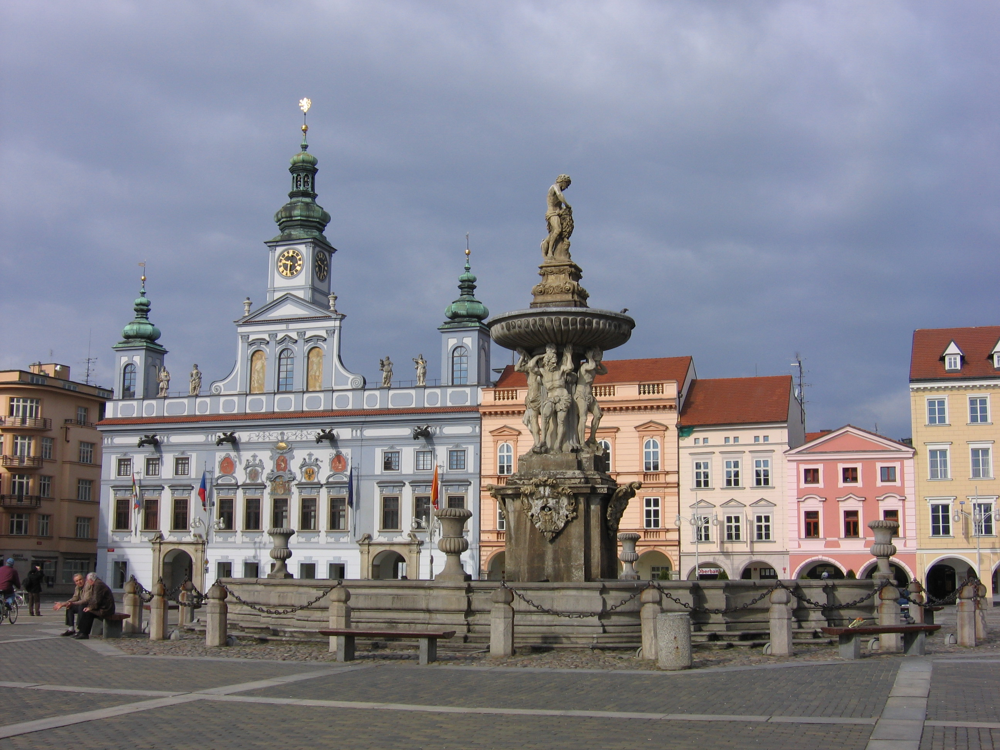
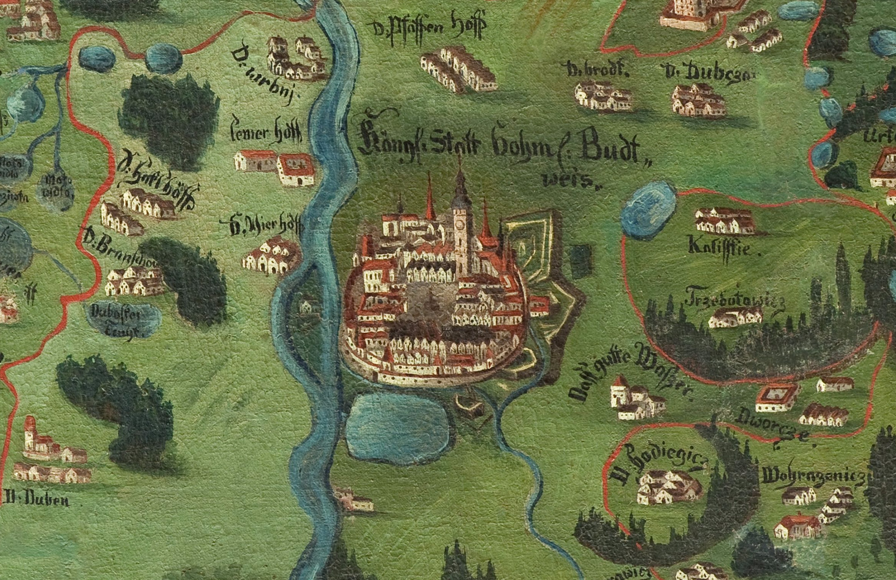

La región de Bohemia del Sur (Jihočeský kraj en checo) es una unidad administrativa en la República Checa, ubicada en la parte sur de la región histórica de Bohemia. Es conocida por su belleza natural, castillos históricos y pueblos pintorescos.
Imagen de la plaza central en České Budějovice con su icónica fuente
Limita con las regiones de Pilsen, Bohemia Central, Vysočina y Moravia Meridional. También limita con Alemania y Austria. Esta región también suele llamarse Budĕjovický kraj o Českobudĕjovický kraj pero desde 2001 estos términos se han vuelto obsoletos.
Detalle de la ciudad en un mapa de comienzos del siglo XVIII
La capital de Bohemia Meridional es la ciudad de České Budějovice que al mismo tiempo es la ciudad mas poblada de esta región. Conocida por ser la sede de la cerveza Budweiser Budvar, pero también como una importante ciudad universitaria. La primera parte del nombre, České (bohemos), sirve para diferenciarla de la ciudad morava de Moravské Budějovice.